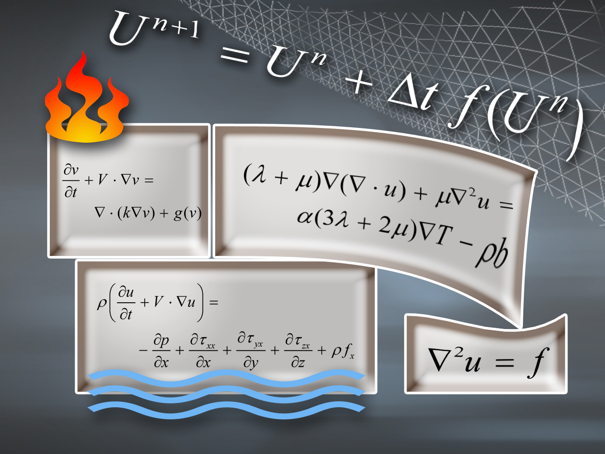

Research
CV with complete publication list
Keywords:
- Mathematical modeling (differential equations)
- Numerical methods for flow problems (water waves, porous media flow, biomedical flows)
- Finite element methods
- Stochastic models and methods in mechanics
- Methods for creating flexible scientific software (high-level languages, scripting, Python, object-orientation)
Academic profile
 My interests concern the interplay between physics, mathematics, and computers. More precisely, I am excited by the fact that we can create models of the world inside a computer and play around with the models in ways that would be impossible, dangerous, or very expensive to do in the real world. For example, engineers apply computer models to design a new airplane; it would be dangerous and expensive to build a trial plane and experience that it didn't fly well. Bridges, cars, buildings, ships, electronic devices, and most other technological things are designed and tried out in a computer model before building the real thing. My research is concerned with improving how we create computer models based on physics and mathematics. A lot of researchers around the world work with this topic every day, and over the last decades tremendous progress has been made. The result is manifested in, among other things, safer and cheaper consumer products, and increased understanding of climate changes and fundamental issues such as the origin of the universe. To see more specifically what I am working with now, visit our website http://cbc.simula.no for Center for Biomedical Computing.
In the late 1980s I took my Ph.D. on how to make better computer models of oil production - in Norway this is a very important problem since the national budget depends on the predicted income from the oil industry, and that prediction is based on computer simulations of the oil recovery process. In the period 1995-2005 I worked with computer simulations of tsunamis, and we had to explain why predicting tsunami hazards on computers could be important. After Dec 25, 2004, nobody has ever questioned the importance of this research. At present, I direct a Center of Excellence devoted to computer models for improving clinical practice at hospitals. For example, we create models for better understanding heart failure, why people get stroke, and why abnormal flows in the head and spine lead to diseases. Based on the understanding from computer models, medical doctors can improve the way we create inhalation medicine or how complicated surgery can be made safer with a better outcome.
I refer to the publication list in the CV for a more detailed, academic impression of my research.
Student requirements
To work with me or my colleagues, you need to be interested in and good at one of the following three subjects: 1) mathematics (especially partial differential equations), 2) physics (especially continuum mechanics and fluid dynamics), or 3) programming (especially Python, C++ and Fortran programming on serial and parallel computers). Everything we do normally ends up in large computer programs that need hours or weeks to run on very powerful computers.